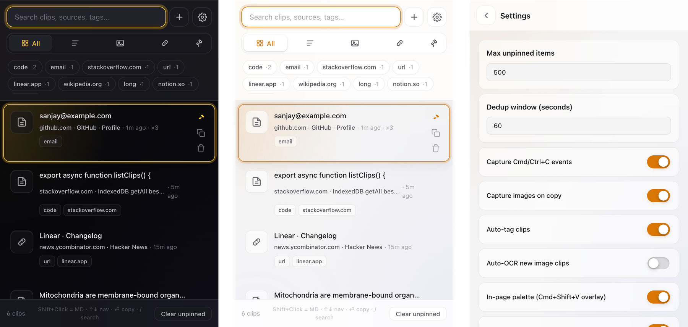
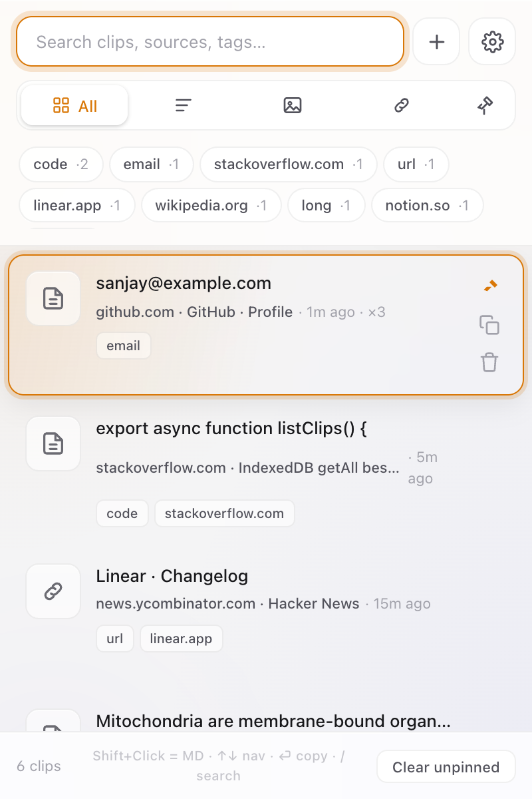
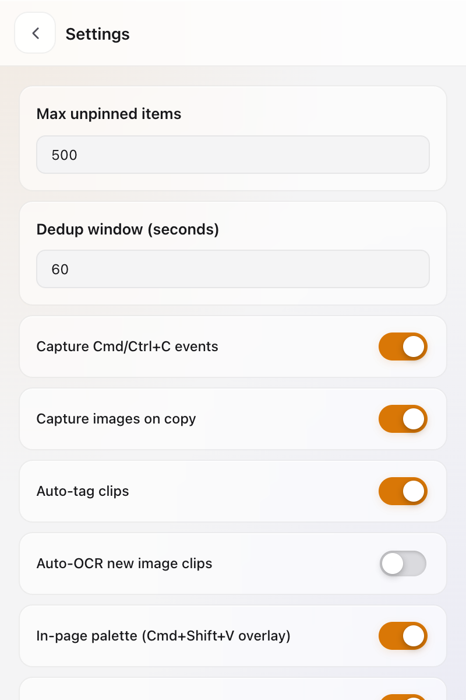

Every copy keeps its source URL, page title, and the surrounding paragraph. Search across thousands of clips. Stays on your device.

Most clipboards forget the moment you hit Cmd+C twice. This one doesn't.
Every clip stores the page URL, title, favicon, and a short surrounding text snippet so you can always find your way back.
⌘ ⇧ V opens a Spotlight-style overlay on any site. Search and paste without leaving the page.
Capture screenshots, dragged images, or right-click on any image. Save once, paste anywhere as Markdown or raw image.
Detects code, email, url, jwt, phone, hostnames, and more — locally. Filter chips show your top tags.
Focus an input you've pasted into before and the right clip shows up as a chip. Auto-fill that actually learns.
⌘-click to select multiple clips. Pin, tag, or delete in one shot. Press X on the active clip to toggle selection.
Pin the clipboard to Chrome's side panel for always-on access while you browse. One toggle in Settings.
Pin clips to survive auto-prune. ⇧+click to paste with citation, fenced code, or proper image markup.
Allow- or block-list specific sites. Bank pages and email clients can stay out of your clipboard history.
Hit / in the popup and type fragments of the content, the page title, the URL, or the nearby paragraph. The clip you actually wanted is one keystroke away.
Smart deduplication bumps a ×N hit counter instead of cluttering your list with the same string copied 11 times.


Everything is stored in your browser's IndexedDB. No account. No server. No analytics. No sync. No telemetry. Nothing leaves your device.
Export to JSON whenever you want a backup. Import on another browser. That's the sync story.
No remote scripts. No bundled SDKs. No phone-home. The source tree is small enough to read in a sitting.
The popup is faster than the mouse. The in-page palette is faster than the popup.
The Chrome Web Store listing is in review. For now, load it unpacked.
git clone https://github.com/Sanjays2402/context-clipboardnpm install && npm run buildchrome://extensionsdist/chrome